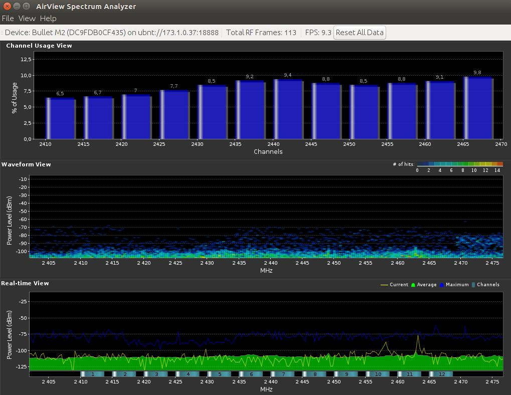
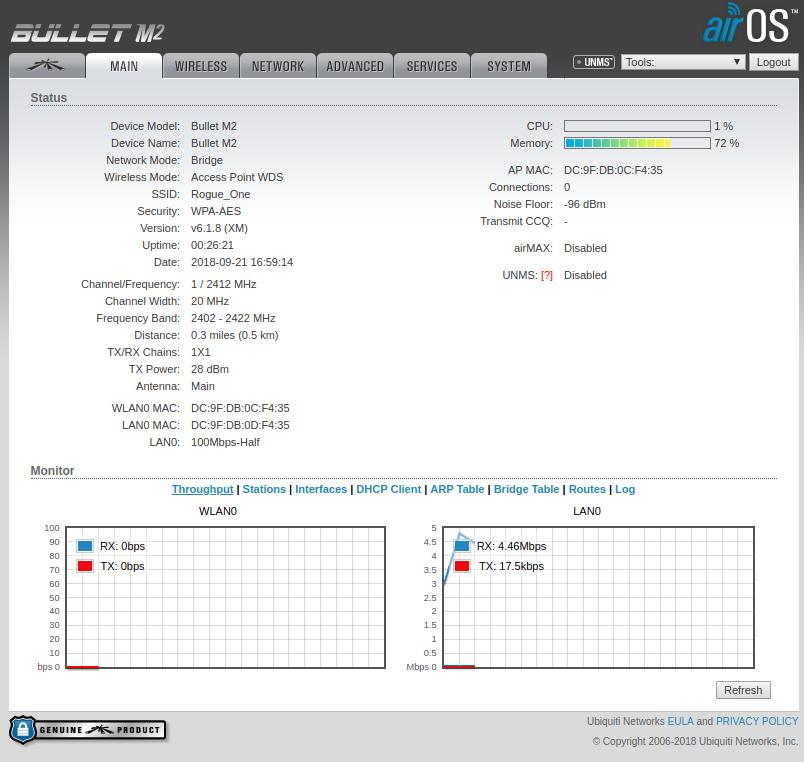
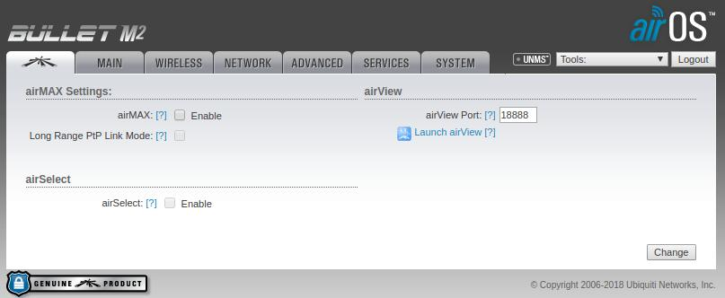
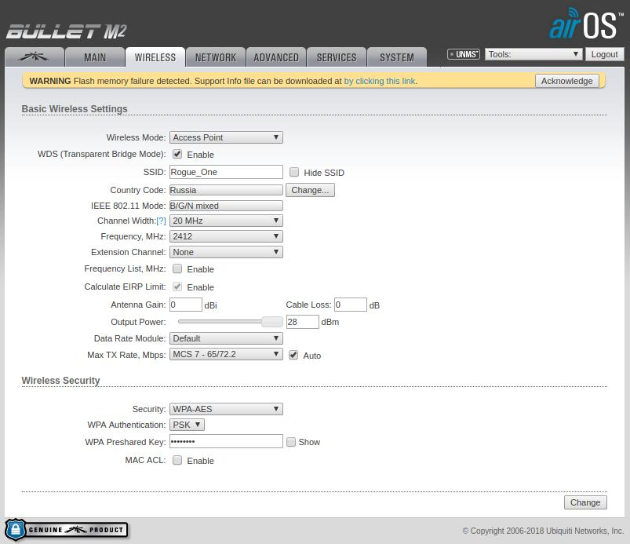
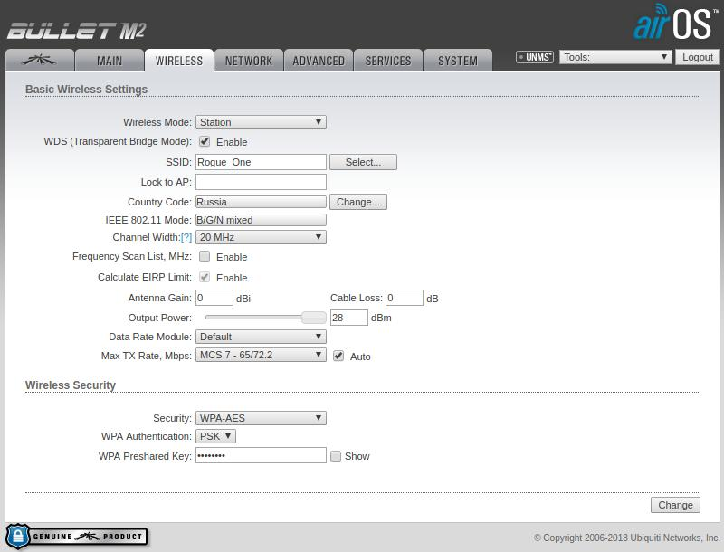
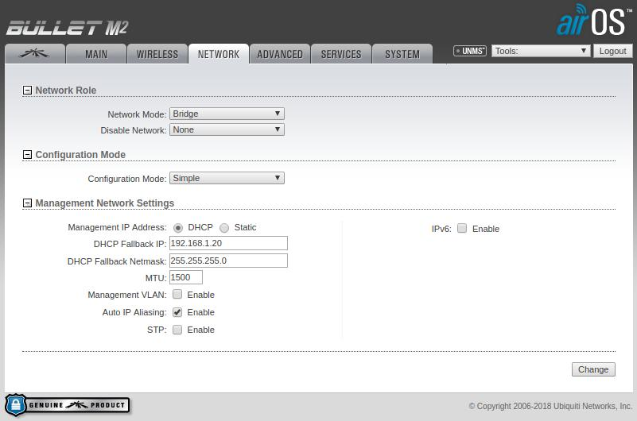
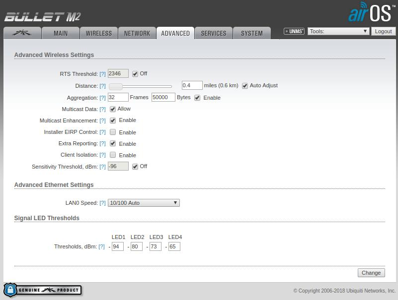
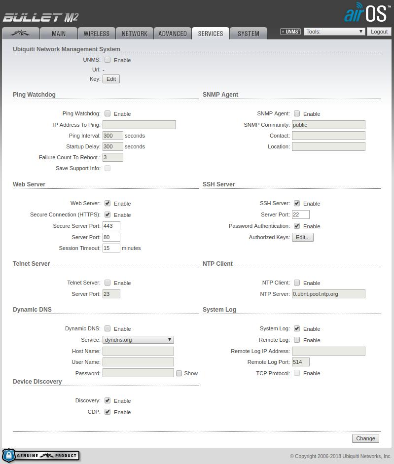
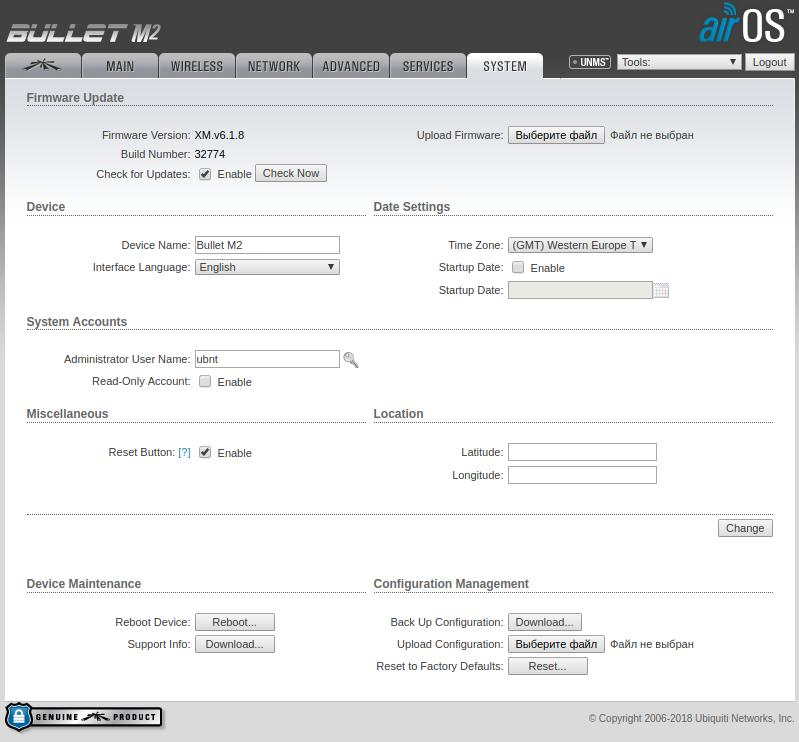

Bullet
Bullet - точки доступа, с помощью которых катаются все наши роботы.
Официальный сайт UBNT.
То, что используем мы - точки доступа серии airMAX Bullet M.
Точка доступа, к которой подключается Джонни (наш робот телеприсутствия) - точка доступа airMAX Rocket M5.
Содержание раздела
Общие сведения об используемых точках
Bullet как и Rocket питается по технологии PoE. Это значит, что по тому Ethernet кабелю, который втыкается в Bullet, течет где-то от 8 до 24 В. То есть если вы перепутаете, какой провод куда втыкать, в лучшем случае вы лишитесь только сетевой карты. Отсюда два простых правила:
- ПОЕ В ПУЛЮ;
- Первой всегда подключается Пуля! Тогда, даже если вы перепутаете провод, пуля просто не включится, но ничего не сгорит.
Провод для подключения к роботу изготавливается самостоятельно, лучше под присмотром знающего человека (в идеале - руководителя). Берется Ethernet кабель подходящей длины (обязательно чтобы каждый провод был многожильным), в изоляции делается надрез и извлекаются 4 провода из одного из разъемов: синий, бело-синий, коричневый, бело-коричневый. Их кончики зачищаются, и скручиваются попарно: синий - с синим, коричневый - с коричневым. После этого, ВНИМАНИЕ, коричневый - это минус, синий - это плюс. (Но лучше все еще уточнять у руководителя, или сверять с уже готовым проводом, который точно работал.) Так получается провод, у которого в одном разъеме 4 провода - Это LAN (подключается в Raspberry Pi, или ноутбук), во втором разъеме 8 проводов - это PoE (подключается только в Bullet).
Мы используем Bullet обычно в двух режимах работы:
- Access point - точка доступа. Это значит что Bullet раздает сеть, к которой могут подключаться другие устройства. Например Wi-Fi в лаборатории раздает Bullet настроенный как точка доступа;
- Station - станция. Это значит, что этот Bullet будет пытаться подключиться к точке доступа, которая указана у него в настройках. Например все Bullet'ы, которые катаются на наших роботах, настроены в режим Station.
На Bullet'ах и на Rocket'е есть 6 светодиодов (по какой-то причине у новых Bullet M5 Titan они спрятаны внутрь корпуса):
- Первый - обозначен значком "выкл" - питание Bullet. Либо горит зеленым, либо не горит вообще;
- Второй - обозначен стрелочками влево-вправо. Либо не горит, либо моргает. Обозначает наличие связи по проводам. Если моргает - пакеты идут, если не горит - значит связи нет (скорее всего забыли включить провод в компьютер);
- Следующие 4 - уровень сигнала. Активны только когда Bullet'ы "сцепились" между собой. То есть подключение между Bullet'ами установлено и они видят друг друга по wi-fi.
- Если вдруг Bullet настроен как точка доступа без airMAX или без пароля, эти 4 светодиода будут гореть если к точке доступа в принципе кто-то подключен (например телефон или ноутбук к нашему wi-fi в лаборатории).
Разъем, который по умолчанию установлен на Bullet называется N-Type, который бывает Male и Female. Рекомендую смотреть по факту, какой именно понадобится.
Поскольку этот разъем очень большой, для установки на робота он перепаивается на разъем SMA.
AirView
У Bullet'ов есть возможность сканировать окружающее пространство на предмет загруженности каналов Wi-Fi. Для этого используется надстройка AirView которая написана на Java. Удалось его запустить под Ubuntu Linux, только в браузере Mozilla Firefox, потому что все остальные браузеры (пробовал в Google Chrome и Opera) блокируют возможность использования Java.
Для того чтобы запустить AirView необходимо установить пакет Iced Tea, из официального описания следует, что это плагин для браузера, который запускает Java приложения.
Устанавливается из репозитория:
sudo apt install icedtea-8-plugin
После этого AirView запускается либо по кнопке Launch AirView на первой странице веб-интерфейса, либо из выпадающего списка Tools на любой странице веб-интерфейса.
ВАЖНО: когда включается AirWiew, Bullet переходит в режим сканирования сети, и Wi-Fi отключается!Поэтому, чтобы сканер работал, нужно подключатся к Bullet только по проводам!
Если все прошло хорошо, то должно появиться вот такое окно:

Первый график показывает как раз загруженность по каналам. Скорее всего у вас его внешний вид будет отличаться. Чтобы это исправить, можно переключить вид графика на вкладке View. Если возникли какие-то дополнительные трудности в запуске, пожалуйста дополните этот раздел. Тестирование проводилось только на Bullet M2, который раздает Wi-Fi в лаборатории.
Информация по настройке точек доступа
Вся настройка производится через веб-интерфейс (т.е. через браузер). Есть возможность подключаться к Bullet'ам через ssh и проводить настройку таким образом через командную строку, для этого вводится команда:ssh ubnt@ip.address, где ip.address - текущий адрес точки доступа (т.е. по умолчанию будет ssh ubnt@192.168.1.20). Но этого никогда не делали, потому что не было такой необходимости.
По умолчанию IP адрес для Bullet: 192.168.1.20.
В адресную строку браузера вводится IP-адрес Bullet'а, после этого обычно возникает предупреждение о безопасности, добавляем исключение, тогда появляется форма для входа.
По умолчанию:
Логин: ubnt
Пароль: ubnt
Если по какой-то причине вы забыли какой адрес зафиксирован за Bullet'ом доступа, найти ее с помощью сканера сети не выходит, и вообще много что пошло не так, можно сбросить точку доступа до заводских настроек. Для этого на Bullet подается питание, после этого на несколько секунд (10-15) зажимается кнопка Reset (она рядом с ethernet разъемом). Как только Bullet перестал моргать своими светодиодами - к нему можно снова пытаться подключиться по стандартному IP-адресу, со стандартным логином и паролем.
Если все прошло хорошо, должна появиться вот такая картина (для Bullet'а настроенного как точка доступа) - вкладка Main:

Здесь отражены все основные сведения о текущем состоянии Bullet'a, названия в большинстве своем говорят за себя. Основные, которые будут вас волновать скорее всего чаще всего:
- Wireless Mode - в каком режиме работает Bullet, станция или точка доступа;
- SSID - имя сети, которую данная точка доступа раздает;
- Channel/Frequency - номер канала, на котором работает Bullet, должен быть настроен одинаково для всех Bullet'ов в сети;
- Channel width - должен быть настроен одинаково для всех Bullet'ов в сети;
- airMAX - включена ли надстройка airMAX, опять же, должно быть одинаково настроено для всех Bullet'ов в сети (либо у всех выключено).
Вкладка airMAX

Здесь происходит настройка всех параметров airMAX для Bullet'ов. Если Bullet настроен как точка доступа (на картинке), здесь можно включить или выключить эту надстройку.
Если Bullet настроен как станция, здесь можно выставить приоритет airMAX.
Пока никто не экспериментировал с этими настройками в полной мере.
Вкладка Wireless для Bullet настроенного как Access Point

Основные настройки:
- Wireless Mode - Режим работы Bullet - станция, точка доступа, повторитель (не использовалось нами;
- WDS - если я правильно понимаю, это позволяет использовать точки доступа как "прозрачные мосты" в сети, т.е. пакеты просто напрямую пробрасываются от Ethernet до Wi-Fi. Таким образом можно настроить Bullet'ы так, что у них будут IP-адреса настроены под другую подсеть, Raspberry Pi и пульт их видеть не будут, но сеть будет работать;
- SSID - имя Wi-Fi сети, которую раздает точка доступа;
- Channel width - ширина каждого канала. Из справки самого Bullet: чем шире канал, тем выше пропускная способность, но ниже стабильность на больших дистанциях. Не уверен какая настройка будет оптимальной для нас, нужны эксперименты;
- Frequency - частота, на которой работает Bullet, фактически номер канала на котором он сейчас работает. По хорошему надо использовать сканер частот, определять какой канал более свободен прямо сейчас, и занимать его. Можно выставить в режим auto тогда Bullet будет сам пытаться занять более свободный, но работает это не очень хорошо;
- Antenna Gain, Cable loss, Output power - полагаю, эти три настройки позволят оптимально настроить выходную мощность Bullet, но этим никто особо не занимался, нужны эксперименты;
- Wireless security - здесь настраивается пароль, по которому можно будет подключиться к точке доступа. Можно настроить вплоть до разрешения только конкретным устройствам с конкретным MAC-адресом, но обычно использовали только пароль.
Вкладка Wireless для Bullet настроенного как Station

Настроек здесь гораздо меньше, к тому же большая часть совпадает с настройками точки доступа.
Основные настройки:
- SSID - имя сети, к которой будет подключаться станция. Можно нажать кнопку Select и выбрать точку доступа из тех, которые видны этой станции (очевидно, для этого нужная точка доступа должна быть включена);
- Wireless security - здесь вводится пароль от сети, к которой вы пытаетесь подключиться. Остальные настройки совпадают с настройками точки доступа.
Вкладка Network

Здесь настраивается все, что касается проводного соединения с Bullet.
Основные настройки:
- Management IP Address - фиксированный (Static) или динамический (DHCP) ip-адрес установлен у Bullet'a. Динамический IP должен кто-то выдавать, поэтому DHCP указывается только у Bullet'a подключенного к роутеру, который раздает интернет (например, так настроен Bullet который раздает Wi-Fi в лаборатории). Во всех остальных случаях стоит прописать статический IP и отметить его где-нибудь (например написать прямо на корпусе Bullet'a);
- DHCP Fallback IP - для настройки DHCP. Полагаю это тот IP адрес, который будет задан Bullet'у, если по какой-то причине извне никто не задаст ему адреса;
- IP Address - для настройки Static именно этот IP адрес будет в любом случае присвоен Bullet'у, по этому адресу можно будет к нему подключиться.
Вкладка Advanced
 Откровенно говоря тут никто никогда и ничего не настраивал, так что оставим этот раздел на будущее. Из того, что может быть интересным - настройка Signal LED hresholds - указать какой светодиод должен загораться при каком уровне сигнала.
Вкладка Services

Тут тоже никто ничего и никогда не настраивал. Из того что кажется интересным на первый взгляд:
- Ping watchdog - Bullet будет периодически пинговать указанный IP адрес. В случае если этот адрес окажется недостижим, Bullet перезагружается;
- SSH server - настройки подключения к Bullet по ssh. Не знаю зачем может понадобиться изменять настройки по умолчанию.
Вкладка System

Общие настройки конкретно для этого Bullet'a:
- Текущая версия прошивки, которую следует периодически обновлять. Для этого c официального сайта скачивается последняя версия прошивки, после чего файл заливается на Bullet кнопка рядом с надписью Upload Firmware;
- Здесь же можно настроить имя устройства, имя пользователя по которому происходит подключение к Bullet, часовой пояс (нужно только для логов, как я понял), выключить кнопку reset (никогда так не делайте), и т.д.;
- Из самого полезного - здесь есть кнопка Reboot, чтобы программно перезагрузить Bullet без нажатия на кнопку.